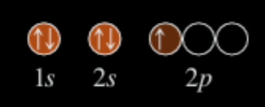
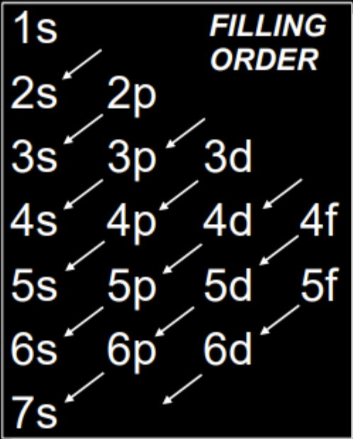
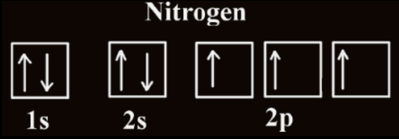

An electron configuration of an atom is a particular distribution of electrons among available subshells.
The notation for a configuration lists the subshell symbols, one after the other, with a superscript giving the number of electrons in that subshell. For example, a configuration of the lithium atom (atomic number 3) with two electrons in the 1s subshell and one electron in the 2s subshell is written 1s\(^2\) 2s\(^1\)
The notation for a configuration gives the number of electrons in each subshell, but we use a diagram to show how the orbitals of a subshell are occupied by electrons. It is called an orbital diagram. Each group of orbitals in a subshell is labeled by its subshell notation. An electron in an orbital is shown by an arrow; the arrow points up when \(\text{m}_\text{s} = + \frac{1}{2}\) and down when \(\text{m}_\text{s} = - \frac{1}{2}\). For example:
The Pauli exclusion principle, which summarizes experimental observations, states that no two electrons in an atom can have the same four quantum numbers. An orbital can hold at most two electrons, and then only if the electrons have opposite spins.
In other words, you cannot place two electrons with the same value of \(\text{m}_\text{s}\) in a 1s orbital. The orbital diagram is not a possible arrangement of electrons.
The maximum number of electrons in various subshells is given in the following table.
| Subshell | Number of Orbitals | Maximum Number of Electrons |
|---|---|---|
| s (l = 0) | 1 | 2 |
| p (l = 1) | 3 | 6 |
| d (l = 2) | 5 | 10 |
| f (l = 3) | 7 | 14 |
It is a scheme used to reproduce the electron configurations of the ground states of atoms by successively filling subshells with electrons in a specific order (the building-up order).
The building-up order corresponds for the most part to increasing energy of the subshells. You might expect this. By filling orbitals of lowest energy first, you usually get the lowest total energy (ground state) of the atom.
Example:
For oxygen (Z = 8):
Configuration: 1s\(^2\) 2s\(^2\) 2p\(^4\)
Proposed by Friedrich Hund, this rule applies when electrons fill orbitals of equal energy (degenerate orbitals) such as the three p orbitals (px, py, pz), five d orbitals, or seven f orbitals.
Electrons occupy separate orbitals in the same sublevel with parallel spins before pairing up.
This minimizes electron repulsion and leads to a more stable arrangement.
Example: Consider the correct electron configuration of the nitrogen (Z = 7) atom: 1s\(^2\) 2s\(^2\) 2p\(^3\)
The p orbitals are half-filled; there are three electrons and three p orbitals. This is because the three electrons in the 2p subshell will fill all the empty orbitals first before pairing with electrons in them.
Written by Fillios Memtsoudis